Arguments file
Arguments files can be used with either txt or csv extension.
Here’s an example of the simplest arguments file which sends only one boolean parameter – true or false – to the script. It’s a string because we can send only the array of strings via doScript() method, but later the script converts it to the necessary data type.
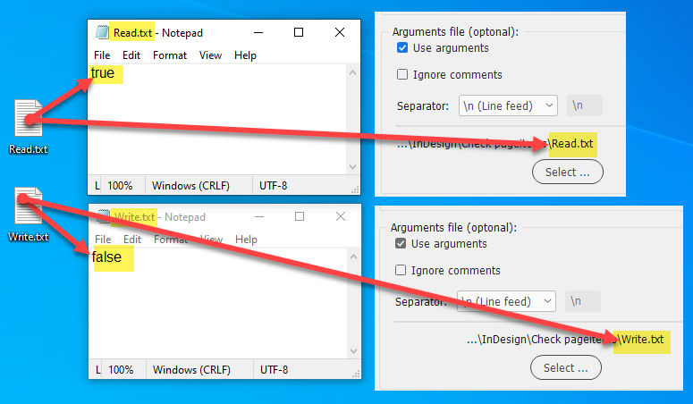
In this particular script, this parameter sets the readMode variable either to true or false so the script knows whether it should read or write locations of the objects.
Here’s a little more complex example.
At first look, it may seem intimidating, but in truth, it is almost as simple as the previous one.
Each method (command) may have one or more parameters that are usually referenced by the order number: first, second, third and so on.
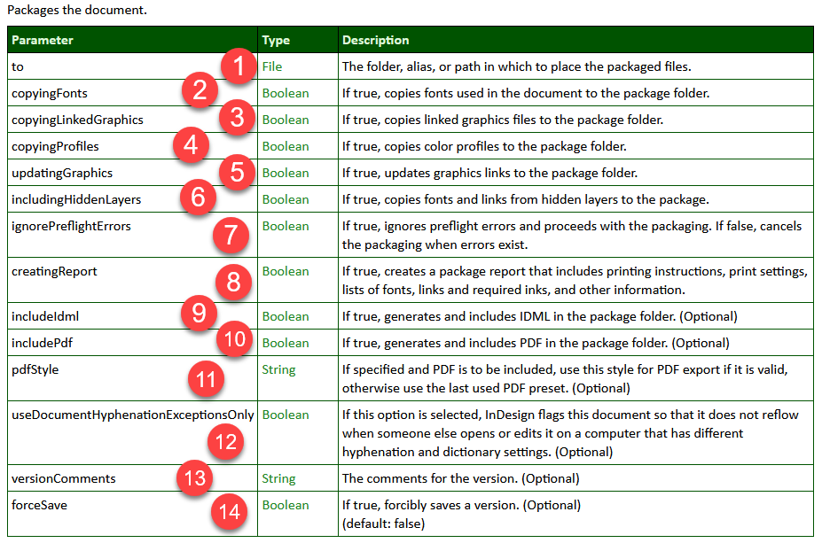
Use the same approach in the arguments file.
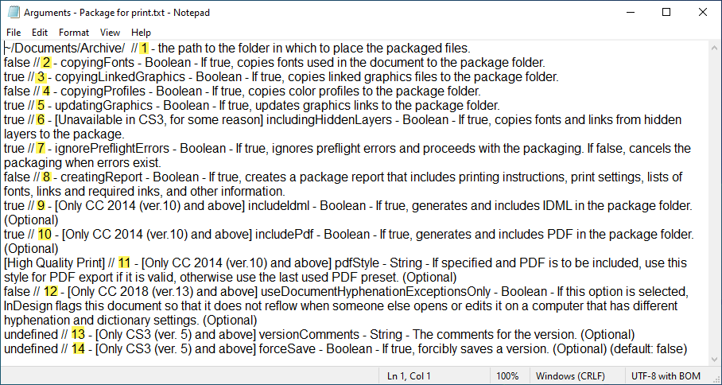
Parameters can be required or optional.
Obviously, you have to set all required parameters: for example, in the screenshot above, the first parameter — to — points the script to the folder where to package the files.
Without it, the script makes no sense. You can skip optional parameters.
However, if you want to skip an optional parameter before a parameter that you want to set, you have to use undefined instead of it.
If you use many arguments, it is a good idea to make comments on them to avoid confusion. In this case, ake sure to turn on the Ignore comments checkbox.
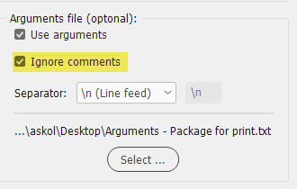
Alternatively, instead of using return or line feed to separate arguments, you can use another character:
- \\n (Line feed)
- , (Comma)
- ; (Semicolon)
- | (Pile)
- A custom character
Example of arguments separated by commas
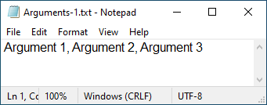
Example of using comments
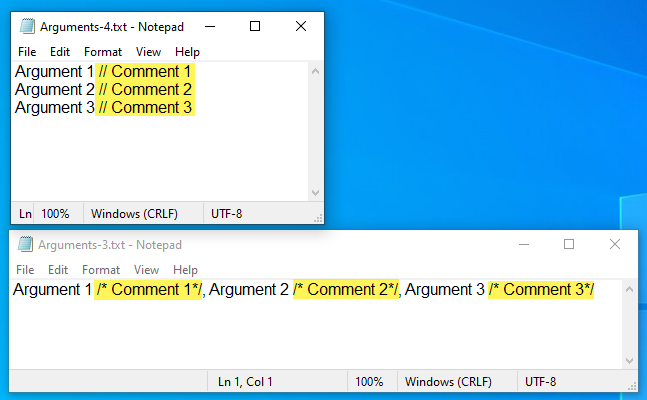
Developing scripts for the batch processor, I concluded it would be much better to make ‘universal’ scripts that work both:
- as regular standalone scripts
- and as the ones used with the batch processor
In such scripts, arguments can be optionally sent from the batch processor. To skip specific arguments, you can one of the following, in this context, totally interchangeable values:
- undefined
- null
- empty string
If one of the above-mentioned value is used for a parameter or the argument file isn’t supplied or the script is triggered from InDesign or ESTK (not from the batch processor) the default values hard-coded in the script will be used.
Examples
undefined
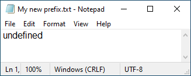
null
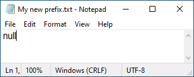
empty string
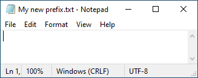
Handling passed arguments in the secondary script
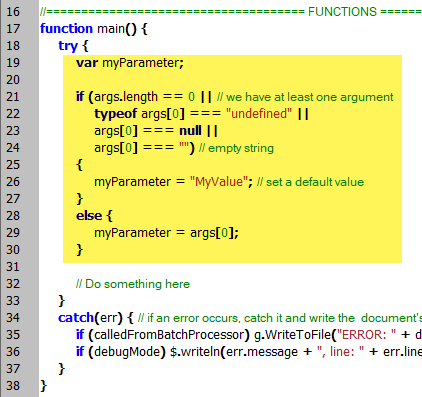
Besides JavaScript, arguments can also be passed to other scripting languages: Visual Basic Script and AppleScript.
Here’s an example of passing an argument in Visual Basic Script:
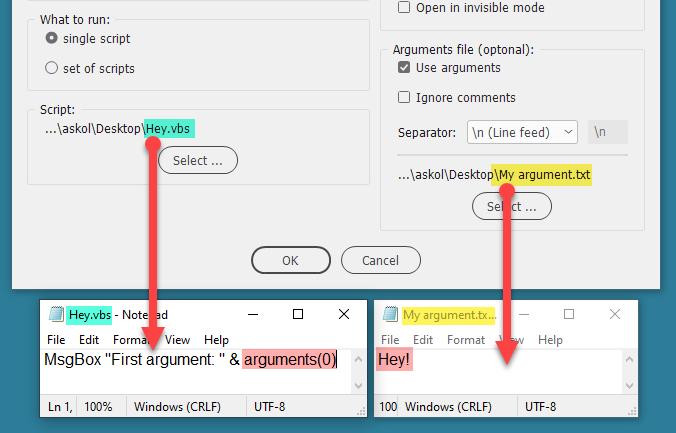
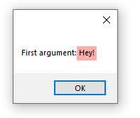
And here’s an example of passing an argument in AppleScript:
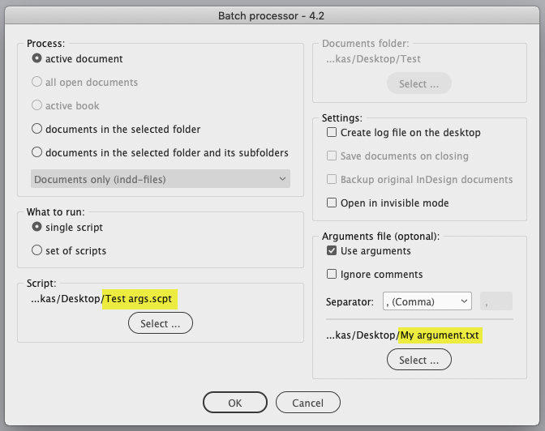
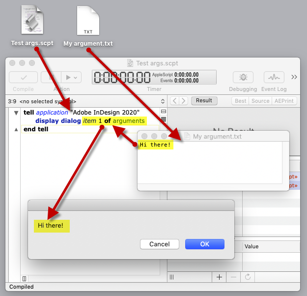
Note: while testing it, the AppleScript should not be open in Script Debugger. Otherwise, the dialog may fail to pop up.
Make sure the expected number of arguments is sent, or check it in AppleScript:
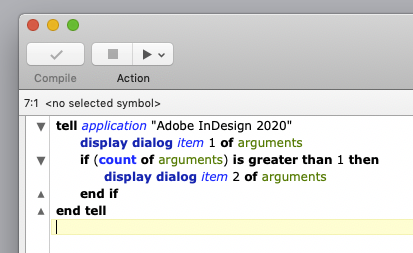
Otherwise, the batch processor would stuck like so:
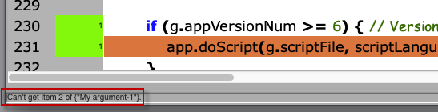
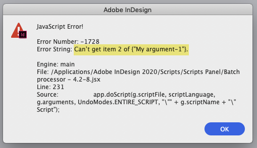
Since JavaScript can't handle an error generated in AppleScript
Back to the main Batch processor page